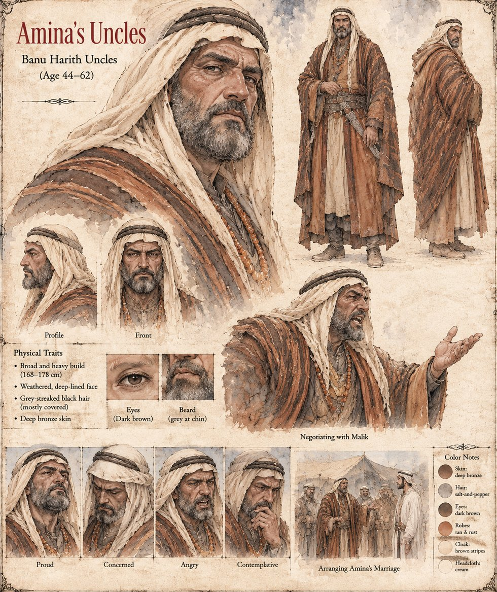

Amina's Uncles
Uncles of Amina bint Rashid, Banu Harith · unnamed · arrange her marriage, then negotiate with Malik when she leaves · mid-forties to early sixties by the sheet
A group of Banu Harith uncles of Amina, never named. They arrange her marriage to Malik without asking her any question to which they expected an honest answer, and when she leaves him, in precise legal words, they conduct the over-polite and awkward negotiations that follow, which Malik bears with the composure the clan admires. The manuscript names none of them; Sulayman ibn Ghanim, her father's brother and the one uncle it does name, has a page of his own.
The sheet gives the group a single face and build: a broad, heavy man of mid-forties to early sixties with a weathered, deep-lined, heavy-browed face, grey-streaked black hair mostly under a cream headcloth, dark eyes, deep bronze skin and a full trimmed beard grey at the chin, in long wool robes in tan and rust under a brown striped cloak, with a curved belt dagger and strings of amber and silver beads. Its expression panels run proud, concerned, angry and contemplative, and two scenes are captioned arranging Amina's marriage and negotiating with Malik. The age range and everything visual are the sheet's.